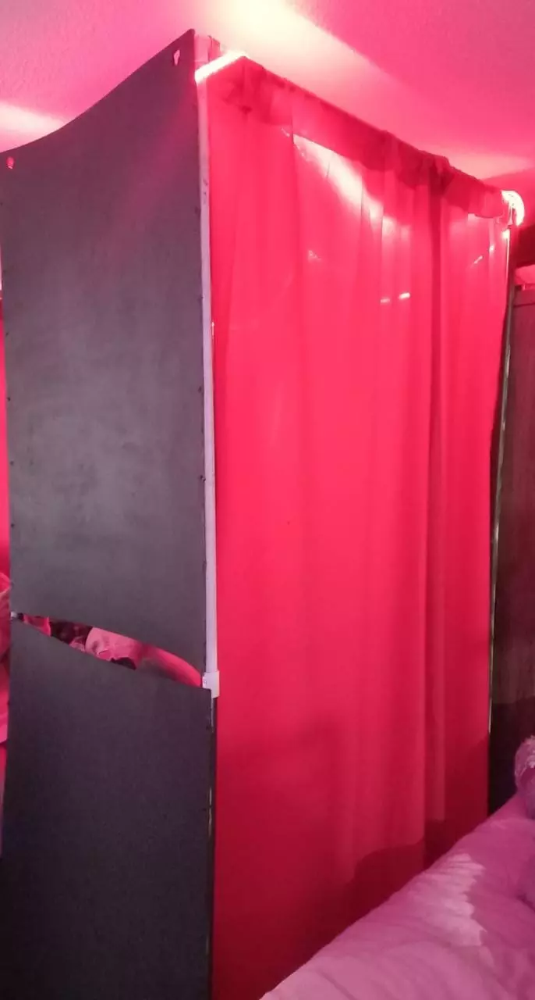
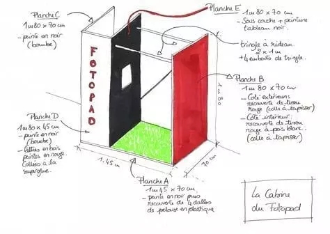

Resumen del Proyecto
El proyecto va como fin el brindar una experiencia nueva y recuerdos mediante la toma de fotografías, esto se hará a través denuestra fotocabina y la tendrán a disposición los estudiantes que se van a graduar.
Esta es la estructura de la cabina fotografica, y un plano de la cabina. Los materiales utilizados para hacer la estructura fueron, carton piedra y para la estabilidad de la misma, tubos de pvc, todo muy bien montado, fijado, decorado y estilizado de la mejor forma posible.

